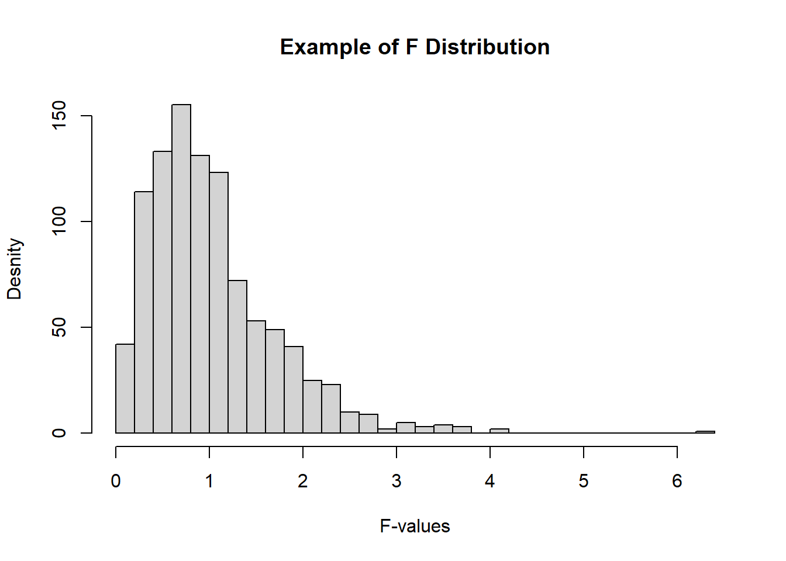

When we conduct a comparison testing of multiple groups such as A, B, and C on each with numeric data, the statistical test for a significant difference among the groups is called analysis of variance, or ANOVA.
pairwise comparison: A hypothesis test (e.g., of means) between two groups among multiple groups.
obmnibus set: A single hypothesis test of the overall variance among multiple group means.
decomposition of variance : Separation of components contributing to an individual value (e.g., from the overall average, from a treatment mean, and from a residual error).
F-test
F statistic: A standardized statistic that measures the extent to which differences among group means exceed what might be expected in a chance model.
sum of squares: deviations from some average value
1 Description
ANOVA는 3개 이상의 모집단 사이의 평균의 동일성을 검정하는 통계 분석 방법이다.
One-way ANOVA(일원 분산 분석)
그룹을 구분하는 변수가 1개
Between-Groups one-way ANOVA(집단간 일원분산분석): 관측치를 grouping하는 범주형 변수가 1개이며 각 관측치는 범주형 변수에 의해 구분되는 그룹들 가운데 반드시 하나에만 할당되어야한다. 즉, 어떠한 경우에도 하나의 관측치 또는 샘플이 여러 groups에 동시에 들어가면 안된다. 이 때 이렇게 그룹을 나누는 범주형 변수를 집단간 요인이라고 한다.
Within-groups one-way ANOVA (집단 내 일원분산분석) or repeated measures ANOVA: 시간과 같은 하나의 범주형 변수로 샘플들을 측정한다. 시간의 경과에 따라 측정된 샘플들을 범주형 변수의 여러 기간에 걸쳐 모두 할당시킨다. 즉, 하나의 샘플이 여러 그룹에 다른 측정치로 관찰될 수 있다. 예를들어, sample A가 4주, 8주, 12주, 16주 그룹에 모두 측정 된다. 이때 기간변수는 집단 내 요인이라고 부른다.
이원 분산 분석 (Two-way ANOVA) : 집단을 구분하는 변수가 2개이며 각 집단 간 요인과 집단 내 요인을 나타낸다. 이원 분석 부터는 main effect와 interaction effect가 존재한다.
공분산분석 (Analysis of Covariance, ANCOVA): 공변량(covariate)을 통제하여 독립변수의 순수한 영향을 검정한다.
반복측정 분산 분석 (repeated measures ANOVA): Within-groups one-way ANOVA 참조
다변량 분산분석 (Multivariate Analysis of Variance, MANOVA): 실험의 타당성과 정확도를 높이기 위해 2개 이상의 종속변수 또는 outcomes을 포함시킨 연구에서 발생한 데이터를 분석할 때 사용한다.
다변량 공분산 분석 (Multivariate Analysis of covariance, MANCOVA): 2개 이상의 종속변수와 covariates를 포함한다.
2 How: F test (F 검정) 이용
분산 분석은 F검정(F test)을 통해 수행한다.
F 검정은 집단 간 분산 (between-groups variability)과 집단 내 분산 (within-groups variability)의 ratio로 계산된 F값 (F value or F statistic)을 토대로 가설검정을 수행한다. 이때 F value or F statistic을 통계 검정을 위한 검정통계량 (test statistic) 라고 부른다.
F 검정 결과가 통계적으로 유의하면 집단 간 평균의 차이가 존재한다. (즉, 독립 변수가 종속변수에 영향을 미침)
F 분포 2개의 자유도에 의해 분포의 모양이 결정되며 대체로 오른쪽으로 긴 꼬리를 갖는다
첫 번째 자유도: 집단 간(between-group)의 자유도
두 번째 자유도: 집단 내(within-group)의 자유도
hist(rf(1000,df1=5,df=50),breaks=30, main="Example of F Distribution", xlab="F-values")

집단 간 분산 (between-groups variability)
\(\frac{집단 간 제곱합}{자유도}=\frac{\sum_g[(\overline{X}_g-\overline{X})^2n_g]}{g-1}\)
\(g=g\) group의 sample size, \(\overline{X}_g=\)\(g\) 의 sample mean, \(\overline{X}=\) global sample mean, \(n_g=\)\(g\) group의 sample size
집단 내 분산 (within-groups variability)
\(\frac{집단 내 제곱합}{자유도}=\frac{\sum_g\sum_i[(\overline{X}_{ig}-\overline{X_g})^2n_g]}{\sum_g(n_g-1)}=\frac{\sum_g[(s^2_g(n_g-1)]}{\sum_g(n_g-1)}=\frac{\sum_g[(s^2_g(n_g-1)]}{n-g}\)
\(g=\) group의 sample size, \(s_g=g\) group의 표준 편차, \(n_g=g\) group의 sample size, \(X_{ig}=g\) 집단의 \(i\) th 관측값, \(\overline{X}_g\): g group의 sample mean, \(n=\) global sample size
\(F=\frac{집단 간 분산}{집단 내 분산}\), 항상 양수
분산 분석에서는 모집단의 등분산성 (Homoscedasticity)을 가정하기 때문에 각 집단의 분산을 표본 크기를 고려한 가중 평균으로 하나의 집단 내 분산을 두번째 식으로 표현할 수 있다.